Analytical and numerical optimization: shortest distance to a function, Newton-Raphson, Golden Section Search, and function fitting by minimizing Mean Squared Error.
Shiva AryaPart 1 · Distance OptimizationPart 2 · Function Fitting
Part 1 — Shortest Distance to a Function
The objective is to find the shortest distance from the points (0,0), (-4,0), (-8,0), (2,0), and (6,0) to the parabola y = x² + 5.
1.1 Analytical Method
Let the external point be P = (t,0), and let a general point on the parabola be Q = (x, x² + 5). The distance is:
d = √[(x − t)² + (x² + 5)²]
Instead of minimizing d directly, I minimize the squared distance because it gives the same minimizing x-value and is easier to differentiate.
D(x) = (x − t)² + (x² + 5)²
Differentiating:
D′(x) = 2(x − t) + 2(x² + 5)(2x)
D′(x) = 4x³ + 22x − 2t
The closest point is found by setting:
4x³ + 22x − 2t = 0
Once x is found, y = x² + 5 gives the corresponding point on the parabola, and the original distance formula gives the minimum distance.
Newton-Raphson starts from an initial guess and repeatedly updates x using the first and second derivatives of the squared-distance function.
xₙ₊₁ = xₙ − D′(xₙ) / D″(xₙ)
D′(x) = 4x³ + 22x − 2t
D″(x) = 12x² + 22
The iterations stop when the difference between consecutive values becomes very small.
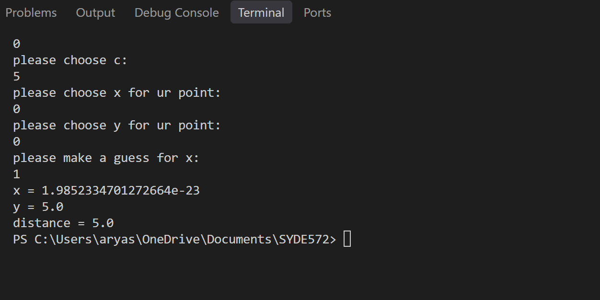
Point (0,0)
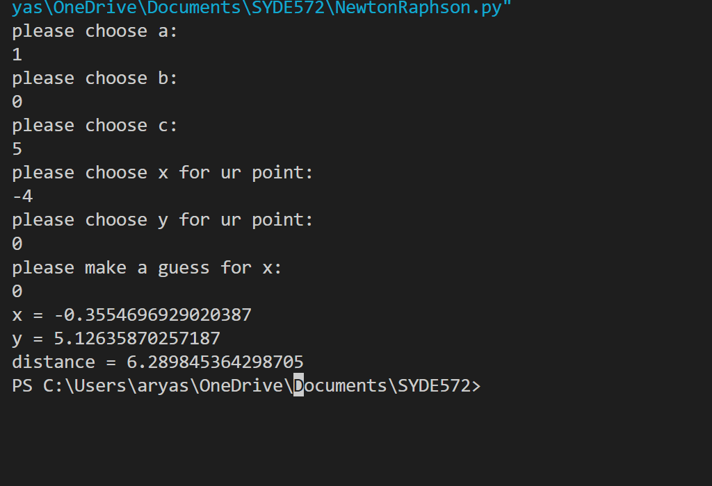
Point (-4,0)
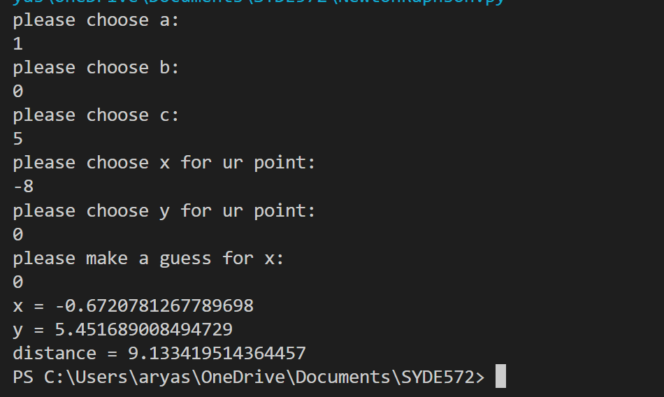
Point (-8,0)
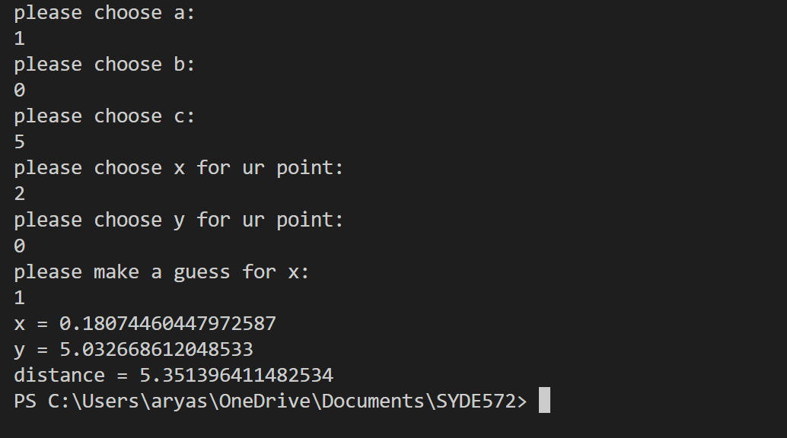
Point (2,0)
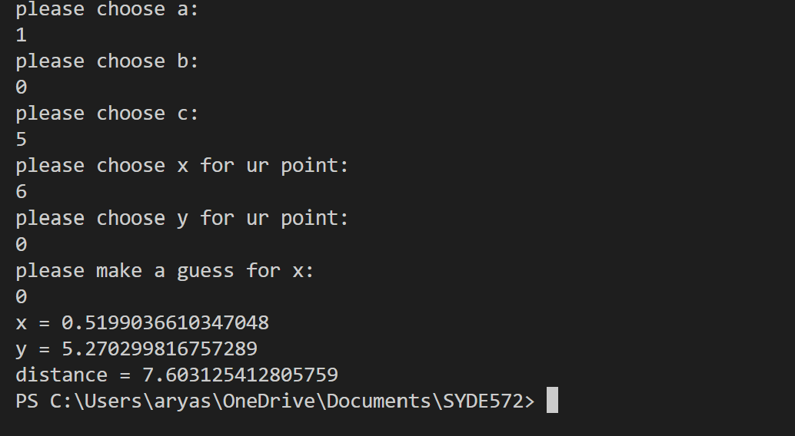
Point (6,0)
1.4 Golden Section Search
Golden Section Search minimizes the squared-distance function over a chosen interval without requiring derivatives. Two internal points are selected using the golden ratio, their objective values are compared, and the worse side of the interval is discarded.
φ = (1 + √5) / 2
r = 2 − φ ≈ 0.382
x₁ = a + r(b − a), x₂ = b − r(b − a)
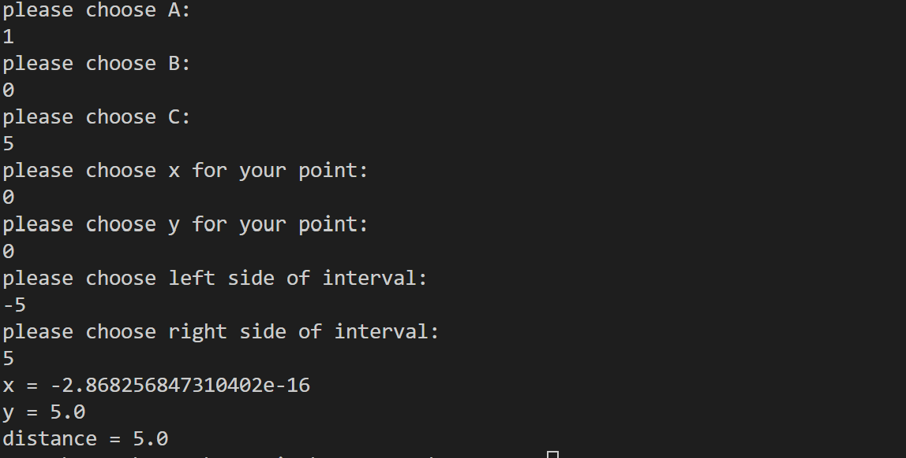
Point (0,0)
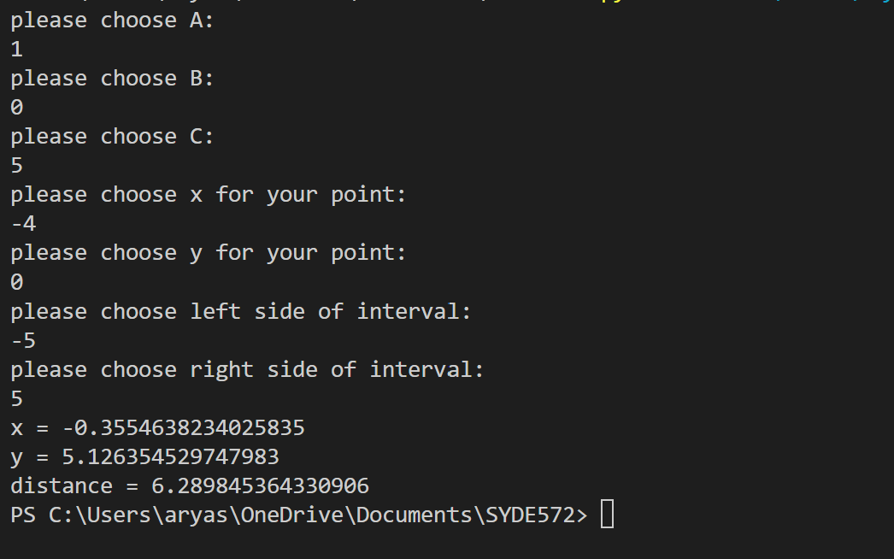
Point (-4,0)
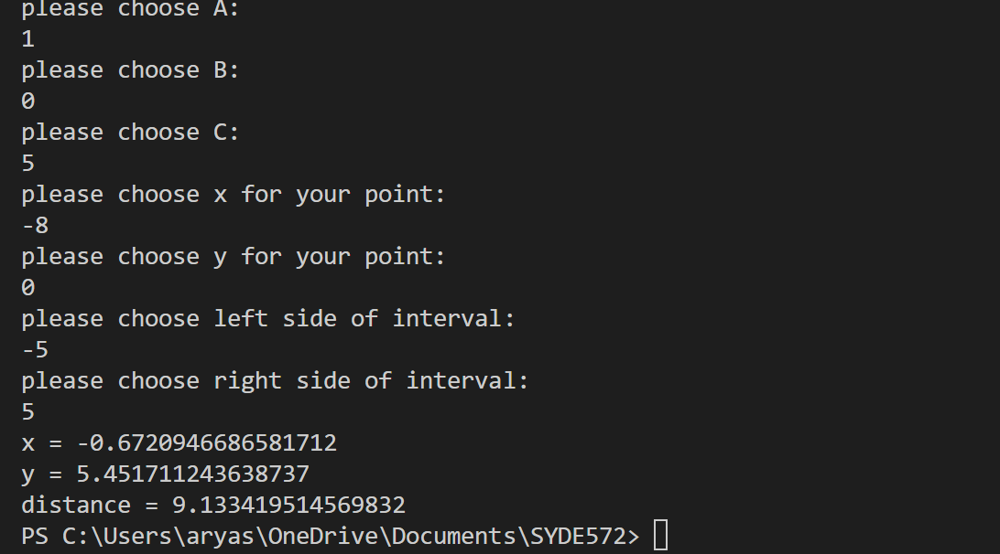
Point (-8,0)
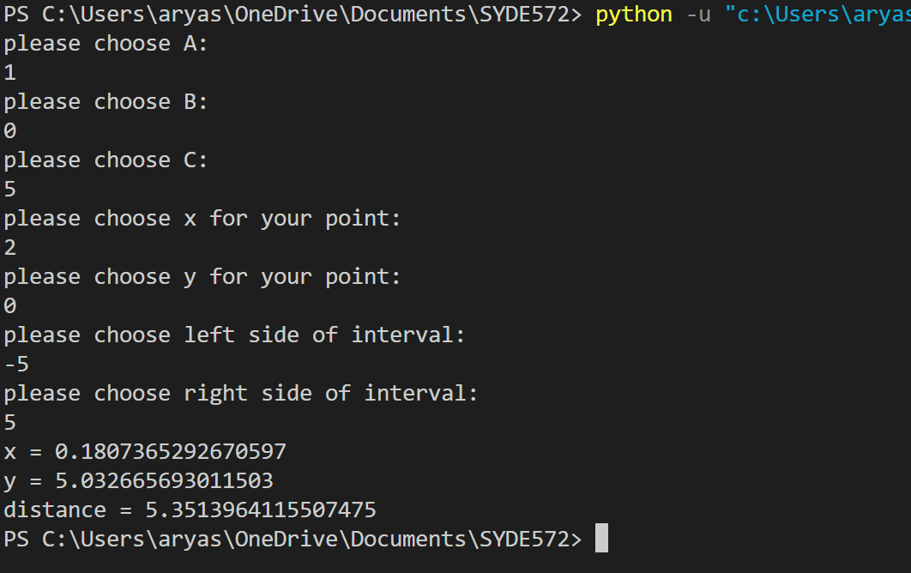
Point (2,0)
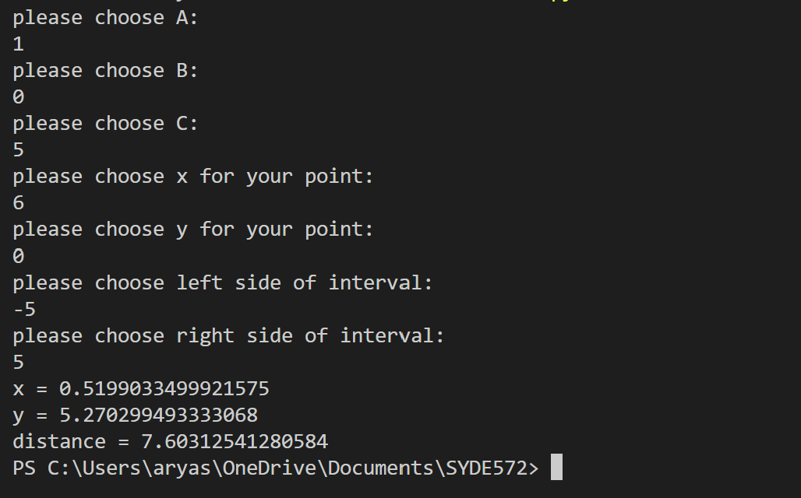
Point (6,0)
1.5 Non-Polynomial Function Test
The two numerical methods were also tested on the exponential function y = eˣ. For the point (6,4), both methods converged to almost the same shortest distance.
Newton-Raphson: x ≈ 1.589261, y ≈ 4.900127, distance ≈ 4.501649 Golden Section: x ≈ 1.589274, y ≈ 4.900190, distance ≈ 4.501649
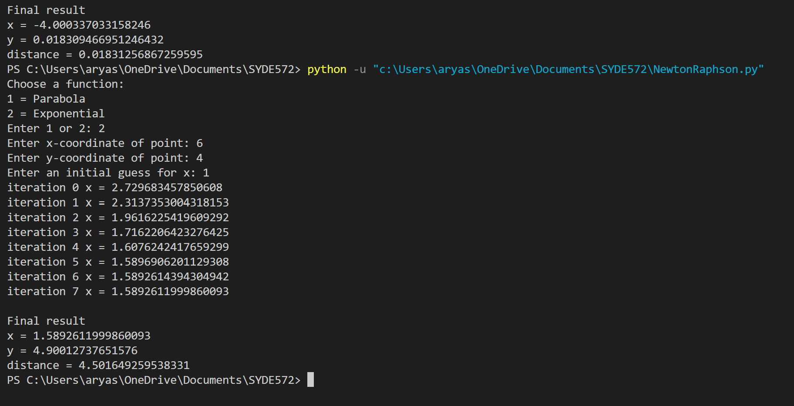
Newton-Raphson exponential test.
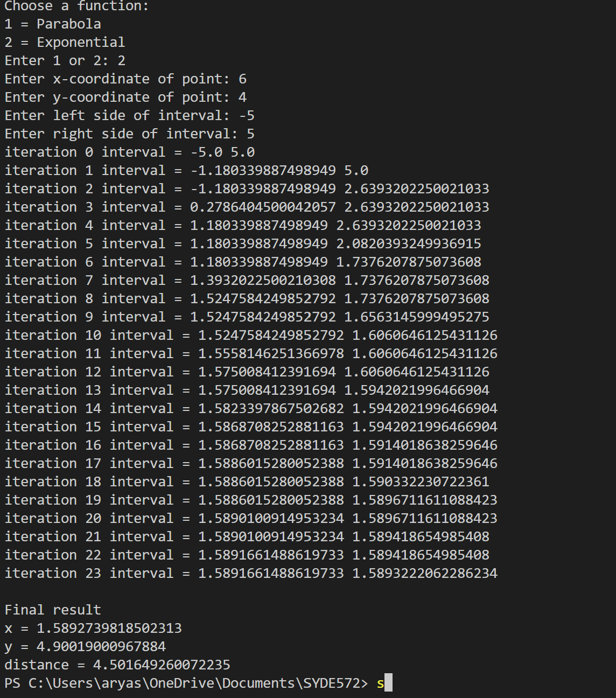
Golden Section exponential test.
1.6 Intermediate-Step Plots
These plots show the numerical convergence process rather than only the final answer. Newton-Raphson estimates approach the closest point, while Golden Section Search progressively narrows the interval around the minimum.
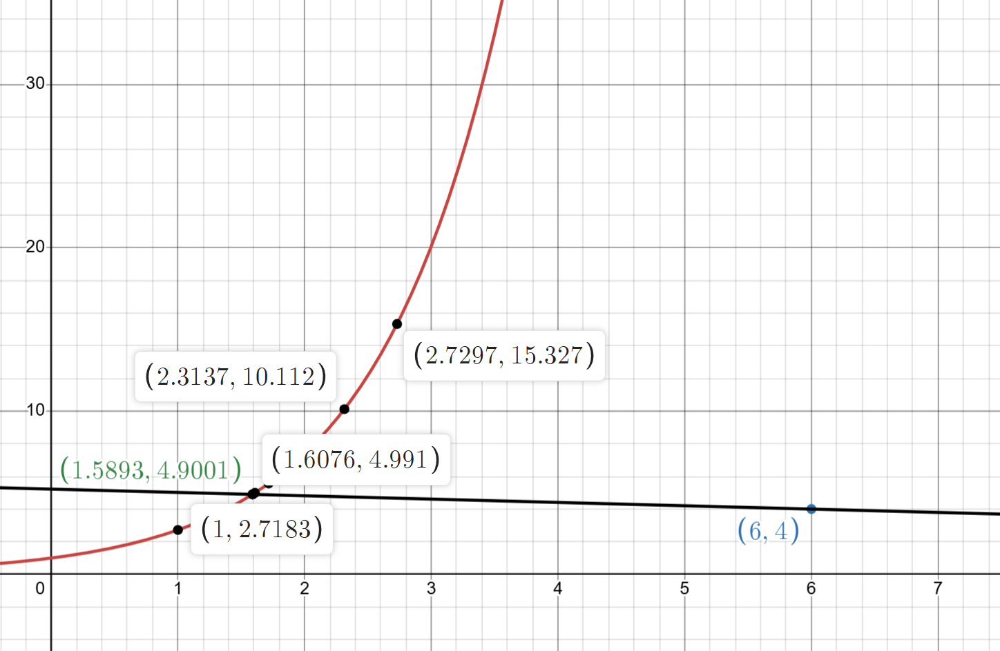
Newton-Raphson intermediate points on y = eˣ.
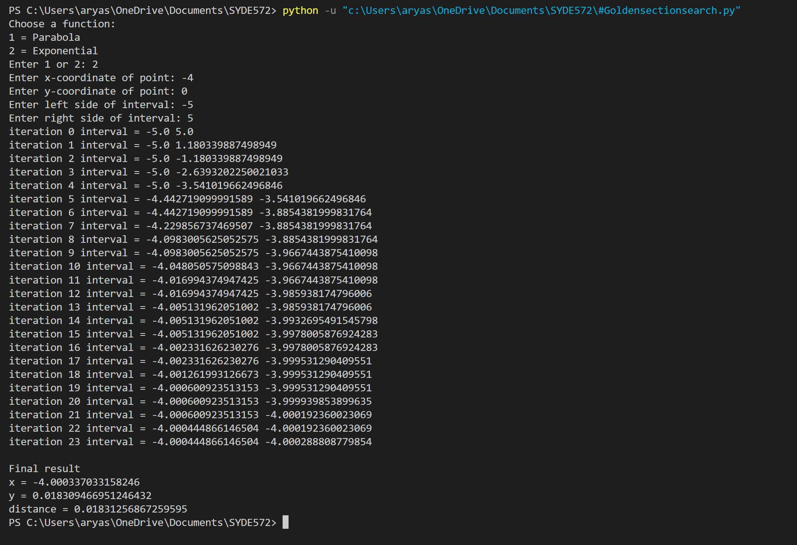
Golden Section Search intermediate intervals.
1.7 Final Comparison
Point
Analytical
Newton-Raphson
Golden Section
(0,0)
5.0000
5.0000
5.0000
(-4,0)
6.2898
6.2898
6.2898
(-8,0)
9.1334
9.1334
9.1334
(2,0)
5.3514
5.3514
5.3514
(6,0)
7.6031
7.6031
7.6031
Part 2 — Fitting a Function
A straight line and a parabola were fitted to the data points (0,0.5), (2,3.5), (1,1.5), and (3,7.5) by minimizing Mean Squared Error (MSE).
2.1 Mean Squared Error
For a fitted function, the prediction error for each point is the predicted y-value minus the actual y-value. MSE is the average of the squared errors.
MSE = (1/n) Σ(ŷᵢ − yᵢ)²
2.2 Matrix Form of Multivariable Newton-Raphson
For a problem with more than one parameter, Newton-Raphson can be written
in matrix form. For the straight-line model y = mx + b, the parameter
vector is:
θ = [ m ; b ]
The gradient contains the first partial derivatives of the MSE:
∇MSE = [ ∂MSE/∂m ; ∂MSE/∂b ]
For the four given data points, this becomes:
∇MSE = [ 7m + 3b − 15.5 ; 3m + 2b − 6.5 ]
The Hessian matrix contains the second partial derivatives:
H = [ 7 3 ; 3 2 ]
The simultaneous multivariable Newton-Raphson update is:
θnew = θ − H⁻¹∇MSE
My Python implementation updates the parameters one at a time rather than
applying the matrix inverse directly. The matrix form is included to show
the standard multivariable Newton-Raphson formulation.
2.3 First Four Numerical Iterations for the Line
Starting from m = 0 and b = 0, the first four one-parameter-at-a-time
Newton updates are:
Iteration
m
b
0
0.0000
0.0000
1
2.2143
-0.0714
2
2.2449
-0.1173
3
2.2646
-0.1469
4
2.2772
-0.1658
The process continues until the parameter changes become very small,
converging to approximately m = 2.3 and b = -0.2.
2.4 Straight-Line Fit
The line model is y = mx + b. I formed the MSE as a function of m and b, calculated the partial derivatives, and set them equal to zero for the analytical solution. I also used a numerical Newton-Raphson update for m and b.
Final line: y = 2.3x − 0.2 MSE: 0.575
Line-fitting intermediate iterations.
2.5 Parabola Fit
The parabola model is y = ax² + bx + c. The MSE was differentiated with respect to a, b, and c, then the resulting equations were solved. A numerical Newton-Raphson implementation was also used to update the three parameters.
a = 0.75 · b = 0.05 · c = 0.55 Final parabola: y = 0.75x² + 0.05x + 0.55 MSE: 0.0125
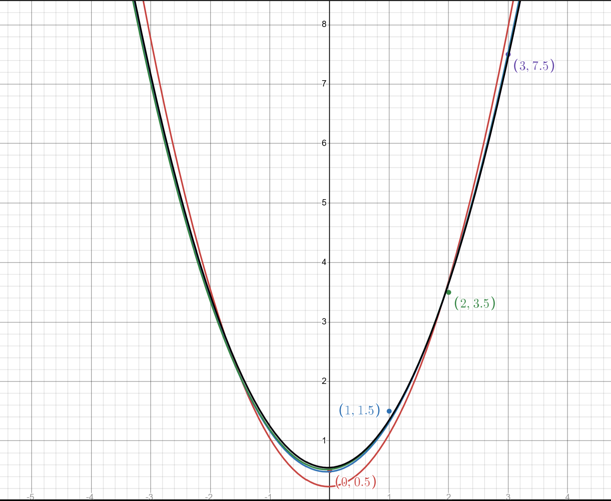
Parabola-fitting intermediate iterations.
2.6 Matrix Form for the Parabola Parameters
For the parabola y = ax² + bx + c, the parameter vector is:
θ = [ a ; b ; c ]
The multivariable Newton-Raphson update can again be written as:
θnew = θ − H⁻¹∇MSE
The gradient is:
∇MSE = [ ∂MSE/∂a ; ∂MSE/∂b ; ∂MSE/∂c ]
Here H is a 3 × 3 Hessian matrix containing the second partial
derivatives, including mixed terms. My Python program updates a, then b,
then c in sequence rather than explicitly inverting the full Hessian.
2.7 First Four Numerical Iterations for the Parabola
Starting from a = 0, b = 0, and c = 0, the early numerical iterations
move the parameters toward the final fitted parabola:
Iteration
a
b
c
0
0.0000
0.0000
0.0000
1
0.8469
0.0364
0.2311
2
0.8005
0.0567
0.3630
3
0.7742
0.0678
0.4385
4
0.7594
0.0735
0.4817
Further iterations continue reducing the parameter changes and converge
toward approximately a = 0.75, b = 0.05, and c = 0.55.
2.8 Final Part 2 Comparison
Model
Final Equation
MSE
Line
y = 2.3x − 0.2
0.575
Parabola
y = 0.75x² + 0.05x + 0.55
0.0125
The parabola gives the smaller MSE, so it follows this set of data points more closely.
Conclusion
In Part 1, analytical calculus, Newton-Raphson, and Golden Section Search produced closely matching shortest-distance results. The numerical methods also worked for the exponential function. In Part 2, a line and a parabola were fitted by minimizing MSE, and the parabola produced the smaller fitting error. The assignment demonstrates how analytical and iterative numerical methods can be used to solve optimization problems.
Python Code
The complete Python programs are available as downloadable files and can also be viewed directly below.
a = float(input("Enter a: "))
b = float(input("Enter b: "))
c = float(input("Enter c: "))
numberofpoints = int(input("How many points do you have? "))
total_points = numberofpoints
xstore = []
ystore = []
while numberofpoints > 0:
x = float(input("Enter x-coordinate of point: "))
y = float(input("Enter y-coordinate of point: "))
xstore.append(x)
ystore.append(y)
numberofpoints = numberofpoints - 1
for iteration in range(100):
partialdrive_a = 0
for i in range(total_points):
prediction = a*xstore[i]**2 + b*xstore[i] + c
error = prediction - ystore[i]
partialdrive_a += xstore[i]**2 * error
partialdrive_a = (2 / total_points) * partialdrive_a
second_a = 0
for i in range(total_points):
second_a += xstore[i]**4
second_a = (2 / total_points) * second_a
a_new = a - partialdrive_a / second_a
partialdrive_b = 0
for i in range(total_points):
prediction = a_new*xstore[i]**2 + b*xstore[i] + c
error = prediction - ystore[i]
partialdrive_b += xstore[i] * error
partialdrive_b = (2 / total_points) * partialdrive_b
second_b = 0
for i in range(total_points):
second_b += xstore[i]**2
second_b = (2 / total_points) * second_b
b_new = b - partialdrive_b / second_b
partialdrive_c = 0
for i in range(total_points):
prediction = a_new*xstore[i]**2 + b_new*xstore[i] + c
error = prediction - ystore[i]
partialdrive_c += error
partialdrive_c = (2 / total_points) * partialdrive_c
second_c = 2
c_new = c - partialdrive_c / second_c
print("Iteration", iteration)
print("a =", a_new)
print("b =", b_new)
print("c =", c_new)
if (abs(a_new - a) < 0.0001
and abs(b_new - b) < 0.0001
and abs(c_new - c) < 0.0001):
a = a_new
b = b_new
c = c_new
break
a = a_new
b = b_new
c = c_new
squared_errors = []
for i in range(total_points):
prediction = a*xstore[i]**2 + b*xstore[i] + c
error = prediction - ystore[i]
squared_errors.append(error**2)
final_MSE = sum(squared_errors) / total_points
print("Final a =", a)
print("Final b =", b)
print("Final c =", c)
print("Final MSE =", final_MSE)
Appendix — Handwritten Working Evidence
The calculations above are presented in typed form for clarity. The photographs below are included as supporting evidence of the handwritten calculations and working process.
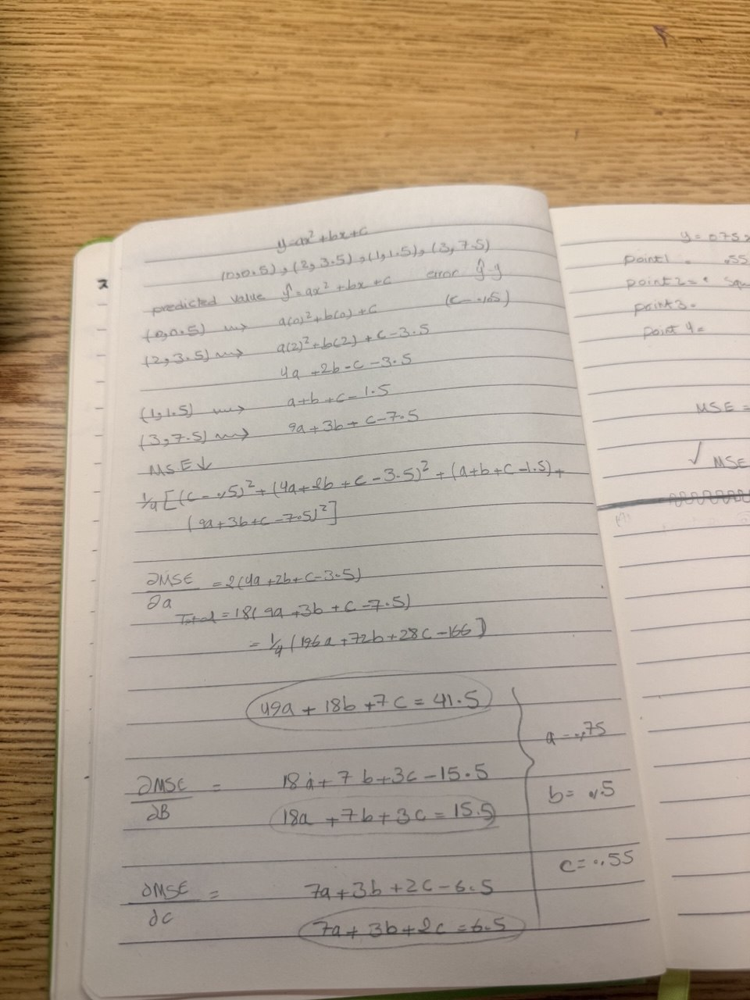
Handwritten working — Figure A1.
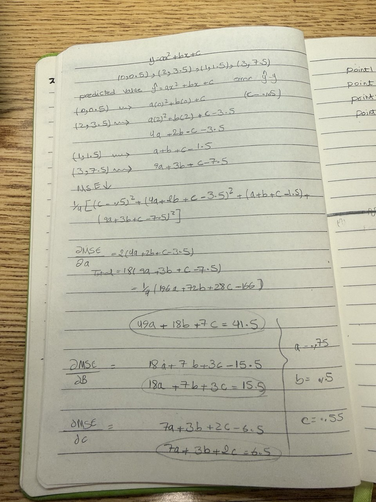
Handwritten working — Figure A2.
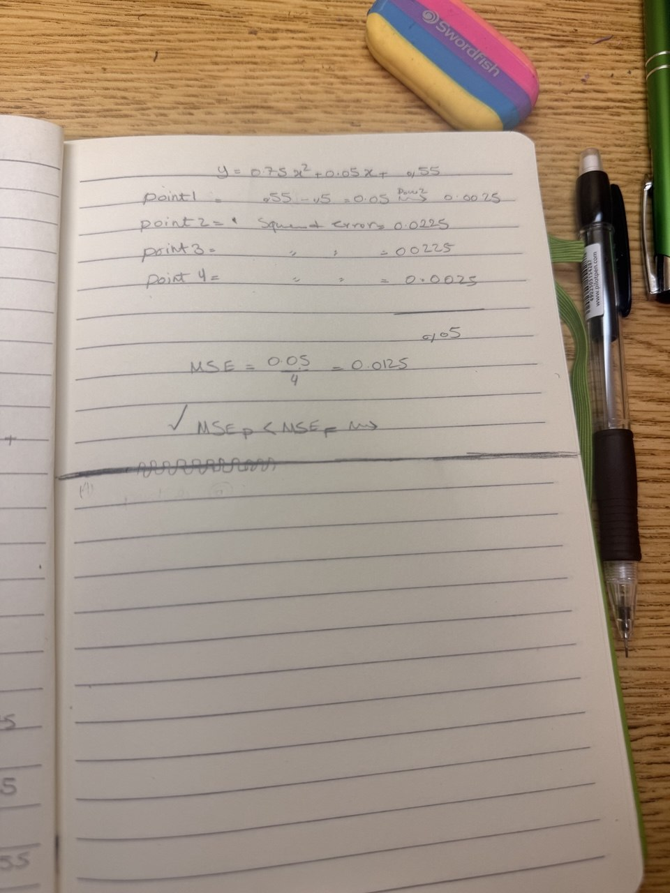
Handwritten working — Figure A3.
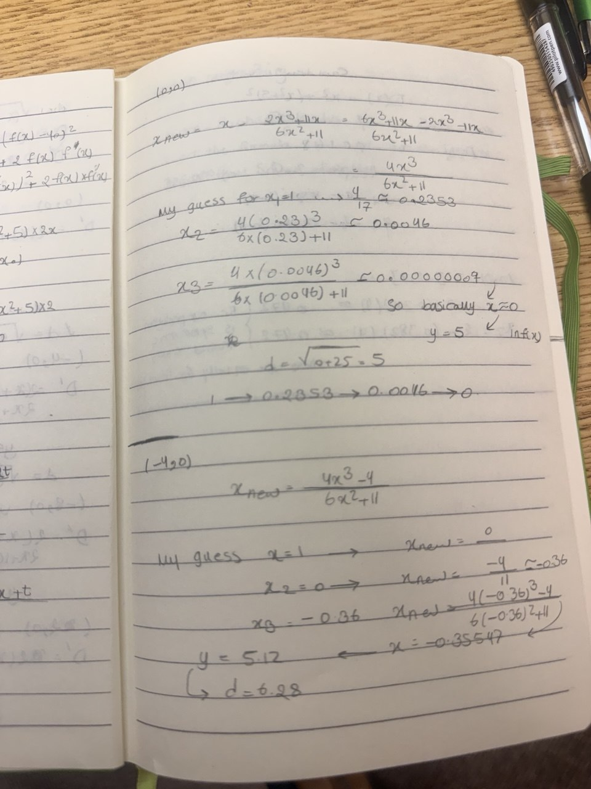
Handwritten working — Figure A4.
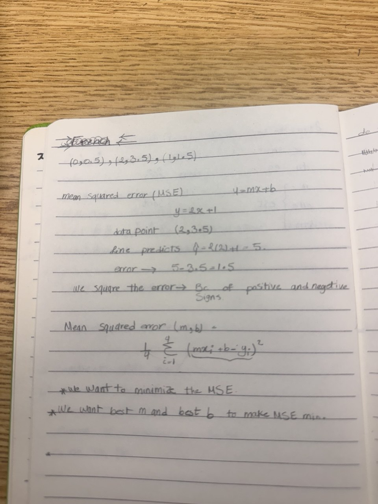
Handwritten working — Figure A5.
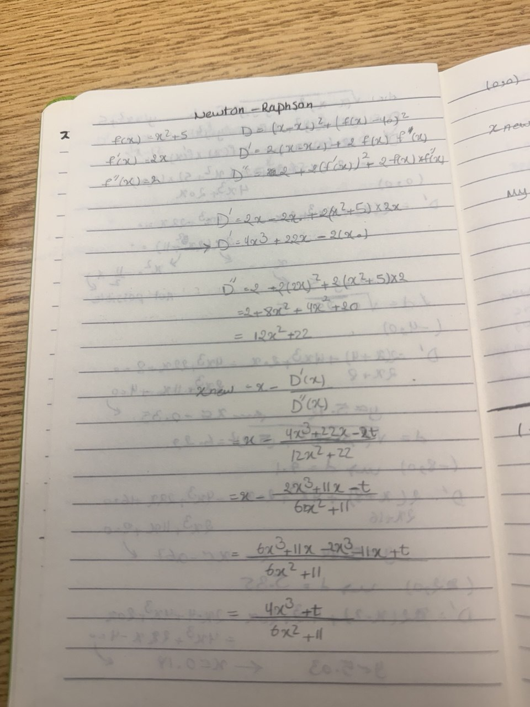
Handwritten working — Figure A6.
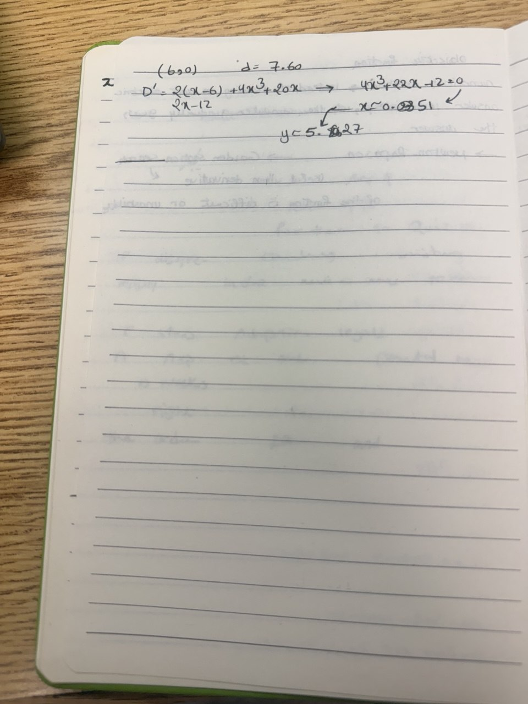
Handwritten working — Figure A7.
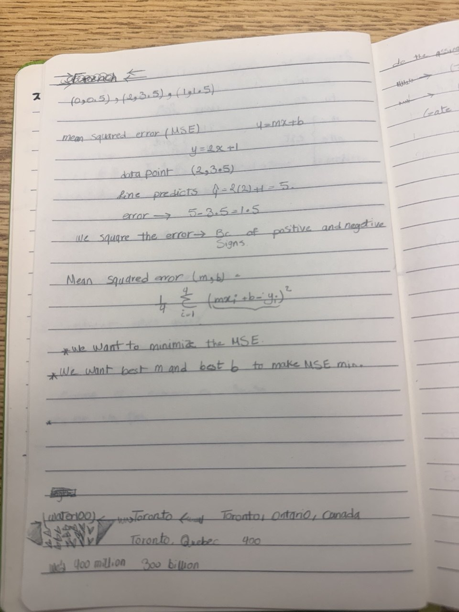
Handwritten working — Figure A8.
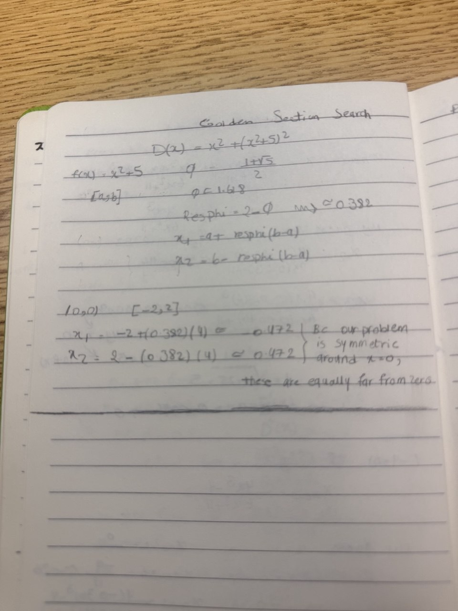
Handwritten working — Figure A9.
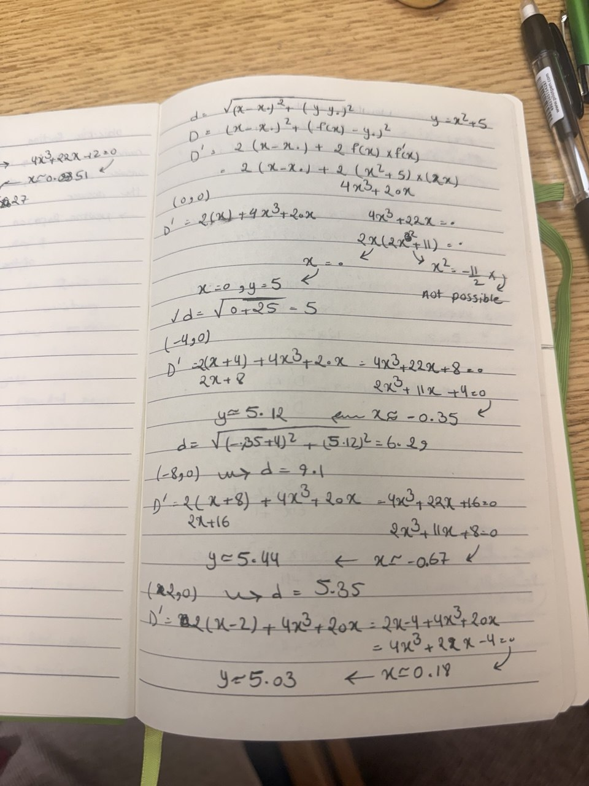
Handwritten working — Figure A10.
These images use the filenames already present in the existing GitHub images folder.